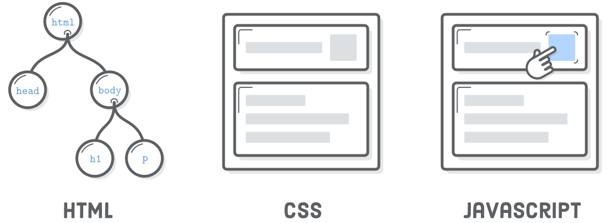
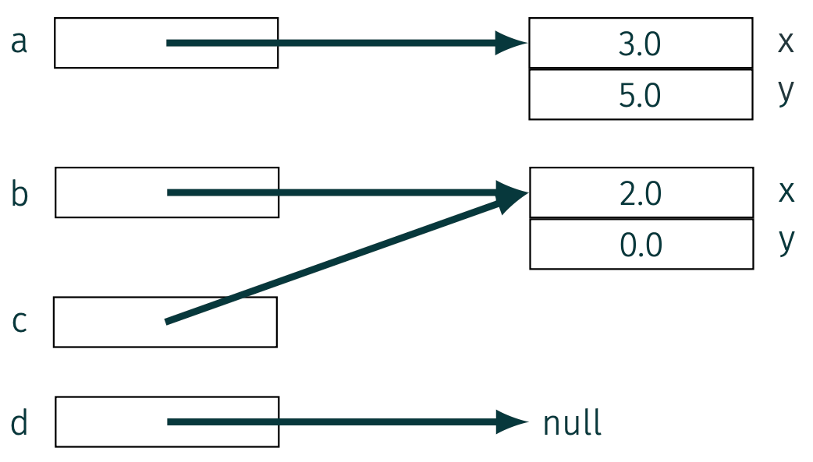

Web Dynamique côté Client
Les objets en JavaScript
Suite de l'UE "Conception d'Interface Web"
- Structuration/organisation du contenu (texte, images, vidéos) : HTML
- Présentation (visuelle) du contenu : CSS
- Rendre ce contenu interactif : JavaScript

Dans ce chapitre
- Les objets en JavaScript
- Notion d'objet en JavaScript
- Création et manipulation d'objets
- Méthodes d'objet et mot-clé
this - Références et copie d'objets
- Conversions d'objets en types primitifs
- Constructeur
- La programmation orientée objet
- Objets standards
- Angular
- AJAX
Les objets en JavaScript
- En CIW, nous avons vu les types de données en JavaScript:
- Les types primitifs :
Number,String,Boolean,Null,Undefined - Les types complexes :
ObjectetFunction - Les types dits "primitifs" ne contiennent qu'une valeur (nombre, chaîne de caractères, booléen, etc.)
- Les types complexes contiennent des collections de valeurs et des entités plus complexes
- Parmi les types complexes, les objets sont centraux en JavaScript
- Initialement, pas "objet" au sens "programmation orientée objet"
Les objets en JavaScript
- Un objet est une collection de paires clé-valeur
- Chaque clé est une chaîne de caractères (sans les
"") - Chaque valeur peut être de n'importe quel type (primitif ou complexe)
- Exemple :
let john = {
name : "John",
age : 30,
like : [
"football",
"hamburger",
"soda"
]
};
Création d'objets
- Deux syntaxes pour créer un objet (vide) :
- Syntaxe "littéral objet" :
let obj1 = {};
let obj2 = new Object();
null (absence volontaire de valeur) ou undefinedCréation d'objets
- La syntaxe littérale permet la création d'objets "non vide"
- Les éléments contenus dans un objet sont ses propriétés
- Leurs clés sont des chaînes de caractères, i.e. de type
String - Les
""sont optionnels si le nom ne contient pas de caractères spéciaux (hormis$et_)
let john = {
name : "John",
age : 30,
"favorite-things" : [
"football",
"hamburger",
"soda"
]
};
Accès aux propriétés
- Deux syntaxes pour accéder aux propriétés d’un objet :
- Syntaxe avec
.:
if (john.age > 18) {
...
}
[] :
if (john["age"] > 18) {
...
}
Accès aux propriétés
- La syntaxe avec
[]autorise plus de choses que la syntaxe avec.
let obj = {
"Ugly property name (that works)" : "Say",
15 : "hello",
1.5 : "world",
let : "!" // possible avec les noms de propriétés mais à proscrire
};
console.log(obj["Ugly property names (that work)"]);
console.log(obj[15]); // equivalent à obj["15"]
console.log(obj["1.5"]);
console.log(obj["let"]);
let name = prompt("Entrez le nom de la propriété");
let obj = {
[name]: "hello",
};
console.log(obj[name]); // non autorisé avec la syntaxe obj.name
. autant que possibleAccès aux propriétés
- Un fois l’objet créé, ses propriétés se manipulent comme des variables
john.age = 41;
john.age++;
john.height = 1.75; // ajout avec la syntaxe .
john["weight"] = 70; // ajout avec la syntaxe []
delete :
delete john.age; // suppression avec la syntaxe .
delete john["weight"]; // suppression avec la syntaxe []
Méthodes d'objet
- Rappel: les fonctions sont des objets particuliers, et peuvent être affectées à des variables
let sayHello = function() {
console.log("Hello");
};
sayHello(); // affiche "Hello"
let john = {
name: "John",
age: 30
};
john.sayHello = function() {
console.log("Hello");
};
sayHello est ajouté en tant que propriété de l'objet johnMéthodes d'objet
- Possible de le faire directement à la création de l'objet
let john = {
name: "John",
age: 30,
sayHello: function() {
console.log("Hello");
}
};
john.sayHello(); // affiche "Hello"
let john = {
name: "John",
age: 30,
sayHello() {
console.log("Hello");
}
};
john.sayHello(); // affiche "Hello"
Méthodes d'objet
Le mot-clé this
- Il est souvent nécessaire d'accéder aux propriétés d'un objet dans une de ses méthodes
- Dans une méthode, le mot-clé
thisfait référence à l'objet courant
let john = {
name: "John",
age: 30,
sayHello() {
// "this" désigne l'objet courant (john)
console.log("Hello, my name is " + this.name);
}
};
john.sayHello(); // affiche "Hello, my name is John"
this fait référence à l'objet john, utilisé pour appeler la méthode sayHelloMéthodes d'objet
Le mot-clé this
thispeut être utilisé dans toutes les fonctions, même s'il ne s'agit pas d'une méthode d'objet- La valeur de
thisest évaluée à l'exécution, en fonction du contexte
let user1 = { name: "John" };
let user2 = { name: "Jane" };
function sayHi() {
alert( this.name );
}
user1.foo = sayHi;
user2.foo = sayHi;
user1.foo(); // John (this == user1)
user2.foo(); // Jane (this == user2)
this est undefined (mode strict)Références
- Rappel: les objets sont manipulés par référence
let a = { x:3.0, y:5.0 };
let b = { x:2.0, y:0.0 };
let c = b;
let d = null;

Références
- Les objets peuvent être déclarés avec
const
const john = {
name : "John",
age : 30
};
john = {
name : "Bob",
age : 25
}; // Erreur !
john.age = 31; // OK
Références
- Les objets peuvent être transmis en argument à une fonction
- Dans ce cas, le paramètre n’est pas une copie de l’objet mais une copie de la référence
function birthday(dude){
dude.age++;
}
console.log(john.age); // affiche "30"
birthday(john);
console.log(john.age); // affiche "31"
birthday( {name: "john", age: 41} );
Références
- Quand on compare deux objets, on compare leur référence
let a = {};
let b = a; // copie la référence
console.log( a == b ); // true, les deux variables référencent le même objet
console.log( a === b ); // true
let a = {};
let b = {}; // 2 objets indépendants
alert( a == b ); // false
alert( a === b ); // false
Copie d'objets
- Affecter un objet à un autre ne copie que la référence. Comment dupliquer un objet ?
- Créer un nouvel objet et copier toutes les propriétés
let john = {
name: "John",
age: 30
};
let clone = {}; // le nouvel objet vide
// On copie les propriétés une à une dans clone
for (let key in john) {
clone[key] = john[key];
}
Copie d'objets
- Affecter un objet à un autre ne copie que la référence. Comment dupliquer un objet ?
- Utiliser la fonction
Object.assign
let john = {
name: "John",
age: 30
};
let clone = {}; // le nouvel objet vide
Object.assign(clone, john);
// ou directement let clone = Object.assign({}, john);
console.log(clone.name); // affiche "John"
console.log(clone.age); // affiche "30"
Copie d'objets
Object.assignpermet de copier les propriétés d'un objet dans un autre
let user = {
name: "John",
age: 30
};
let permissions1 = { canView: true };
let permissions2 = { canEdit: true };
// copie toutes les propriétés de permissions1 et 2 dans user
Object.assign(user, permissions1, permissions2);
// ici, user = { name: "John", age: 30, canView: true, canEdit: true }
alert(user.name); // John
alert(user.canView); // true
alert(user.canEdit); // true
Copie d'objets
Copie profonde
- Comme en Java, une difficulté survient quand une propriété est un objet
let john = {
name: "John",
sizes: {
height: 182,
width: 50
}
};
let clone = Object.assign({}, john);
console.log( john.sizes === clone.sizes ); // true, c'est le même objet
sizes n’est pas dupliquée, c’est sa référence qui l’estCopie d'objets
Copie profonde
- Fonction
structuredClone: clone les objets en cascade
let john = {
name: "John",
sizes: {
height: 182,
width: 50
}
};
let clone = structuredClone(john);
alert( john.sizes === clone.sizes ); // false, ce sont deux objets différents
Accès illégaux
- Si on accède à une propriété inexistante, la valeur est
undefined
let john = {
name : "John",
age : 30,
};
console.log(john.address); // affiche "undefined"
in: permet de tester l’existence d’un propriété ou d’énumérer toutes les propriétés avec for
console.log("age" in john); // affiche "true"
console.log("address" in john); // affiche "false"
for (let key in john) {
console.log(key);
}
Accès illégaux
- Les propriétés
undefinedpeuvent générer des erreurs difficiles à contourner avecin
let john = {
name : "John",
address : {
num : 42,
street : "life street"
}
};
delete john.address;
console.log(john.address.street); // erreur
console.log(john.address ? john.address.street : undefined); // affiche "undefined"
Accès illégaux
- La solution précédente est peu élégante et peut vite devenir illisible
let john = {};
console.log(john.address ? john.address.street ? john.address.street.name : undefined : undefined);
&&
let john = {};
console.log(john.address && john.address.street && john.address.street.name);
// affiche "undefined" (pas d'erreur)
&& et || retournent la dernière valeur évaluée (sans conversion)john.address.street.name si toutes les propriétés existent, soit undefinedAccès illégaux
Chaînage optionnel
- Une solution récente : le chaînage optionnel avec
?.
let john = {};
console.log(john?.address?.street?.name);
?. est non-définie et renvoie undefined
let john = null;
console.log( john?.address ); // undefined
console.log( john?.address.street ); // undefined
Accès illégaux
Chaînage optionnel
?.n’est pas un opérateur mais un raccourci syntaxique- Il peut s’utiliser sur tous les types d’accès
let key = "firstName";
let user1 = {
firstName: "John"
};
let user2 = null;
console.log( user1?.[key] ); // John
console.log( user2?.[key] ); // undefined
delete user?.name; // supprime user.name si user existe
user?.name = "Pete"; // Erreur
Accès illégaux
Remarques
- Cette construction syntaxique est pratique mais dangereuse
- Si on l'utilise trop systématiquement, cela va masquer les erreurs de programmation
- Il ne devrait être utilisé que pour les propriétés optionnelles dans notre logique de code
- De façon générale, la programmation défensive est préférable
- De plus, cela ne fonctionne pas avec les variables non déclarées
Conversion d'objets
Conversion de type primitifs
- Nous avons vus que JS peut effectuer des conversions automatiques entre types primitifs
- Exemple: la fonction
console.log()convertit ses arguments en chaînes de caractères
let value = true;
console.log(value); // affiche "true"
let value = "5";
console.log(value * 2); // affiche "10"
let value = "Hello";
console.log( !value ); // affiche "false"
Conversion d'objets
Cas particulier de l'opérateur +
- L'opérateur
+peut faire soit une addition, soit une concaténation - Si au moins un des opérandes est une chaîne de caractères, l'autre est converti en chaîne et les deux sont concaténés
console.log( 1 + "2" ); // affiche "12"
console.log( "Hello, " + 5 ); // affiche "Hello, 5"
console.log( 1 + 2 ); // affiche "3"
console.log( true + 2 ); // affiche "3"
Conversion d'objets
- Que se passe-t-il si on fait des opérations sur les objets (e.g.
john+bob)? - Ou si on essaie d'afficher un objet (e.g.
console.log(john))? - JS essaye de convertir les objets en types primitifs
- Ces conversions ne sont pas implicites, mais on peut les définir explicitement
- Seulement deux conversions possibles: en
Stringou enNumber - Pas de conversion en
Boolean: tous les objets sonttrue
Conversion d'objets
Conversion en String
- Par défaut, la conversion en
Stringutilise la méthodetoString(), prédéfinie
let john = {
name: "John",
age: 30
};
console.log(john.toString()); // affiche [object Object]
let john = {
name: "John",
age: 30,
toString() {
return `{name: "${this.name}", age: ${this.age}}`;
}
};
console.log(john.toString()); // affiche {name: "John", age: 30}
toString n'est pas implicite comme en JavaConversion d'objets
Conversion en Number
- Par défaut, la conversion en
Numberutilise la méthodevalueOf() - Cette méthode est prédéfinie mais retourne l'objet lui-même, donc inutile pour la conversion (?)
- On peut redéfinir cette méthode pour personnaliser la conversion
let john = {
name: "John",
age: 30,
valueOf() {
return this.age;
}
};
console.log(john + 10); // affiche 40
valueOf retourne un objet, elle est ignorée et la conversion utilise toString()
let bob = {
name: "Bob",
age: 45
};
console.log(bob + 10); // affiche "[object Object]10"
Conversion d'objets
Conversion en Number ou String
- On peut aussi redéfinir la méthode
[Symbol.toPrimitive]pour gérer les deux conversions
let john = {
name: "John",
age: 30,
[Symbol.toPrimitive](hint) {
if (hint === "string") {
return `{name: "${this.name}", age: ${this.age}}`;
} else {
return this.age;
}
}
};
console.log(String(john)); // affiche {name: "John", age: 30}
console.log(john + 10); // affiche 40
[Symbol.toPrimitive] (cf. documentation)hint indique le type de conversion demandée ("string", "number" ou "default")toString() et valueOf()Constructeur
- On peut vouloir créer plusieurs objets similaires
let user1 = {
name: "John Doe",
age: 42,
mail: "john.doe@univ-rouen.fr",
sayHi: function() {
console.log("Hi! My name is " + this.name);
}
};
let user2 = {
name: "Jane Doe",
age: 40,
mail: "jane.doe@univ-rouen.fr",
sayHi: function() {
console.log("Hi! My name is " + this.name);
}
};
Constructeur
- On peut utiliser une fonction de création appelé constructeur
- Techniquement, c’est une fonction classique (mais par convention, avec une majuscule)
- Appel à cette fonction avec l’opérateur
new
function User(name,age,mail) {
this.name = name;
this.age = age;
this.mail = mail;
this.sayHi = function() {
console.log("Hi! My name is " + this.name);
};
}
let user1 = new User("John Doe", 42, "john.doe@univ-rouen.fr");
let user2 = new User("Jane Doe", 40, "jane.doe@univ-rouen.fr");
user1 et user2 sont 2 objets distincts en mémoireConstructeur
- Quand une fonction est invoquée avec
new, elle effectue les étapes suivantes : - Un nouvel objet vide est créé et affecté à
this - Le code de la fonction est exécuté (généralement pour initialiser les propriétés de l’objet)
- La valeur de
thisest retournée implicitement new User(...)équivaut à:
function User(name, age, mail) {
// this = {}; (implicite quand appelé avec new)
this.name = name;
...
// return this; (implicite quand appelé avec new)
}
newConstructeur
- En général, les constructeurs n’ont pas de
return - Mais s'il y a un
return, la règle est : - Si la valeur retournée est un objet, c’est cette valeur qui est renvoyée à la place de
this - Si la valeur retournée est un type primitif, elle est ignorée et
thisest renvoyé
function User() {
this.name = "John";
return { name: "Roger" }; // <-- retourne cet objet
}
console.log( new User().name ); // Roger
Constructeur
- On peut utiliser des fonctions anonymes avec
new
let user = new function() {
this.name = "John";
this.isAdmin = false;
...
};
userEn résumé...
- Les objets sont des collections de paires clé-valeur
- Éléments sont des propriétés s'ils contiennent des valeurs, des méthodes s'ils contiennent des fonctions
- Manipulés par référence et les propriétés/méthodes peuvent être ajoutées/supprimées dynamiquement
- Mot-clé
thisfait référence à l’objet courant dans une méthode - Accès illégaux aux propriétés : opérateur
inet chaînage optionnel?. - Conversion d’objets en types primitifs via les méthodes
toString(),valueOf()ou[Symbol.toPrimitive] - Constructeurs pour créer plusieurs objets similaires